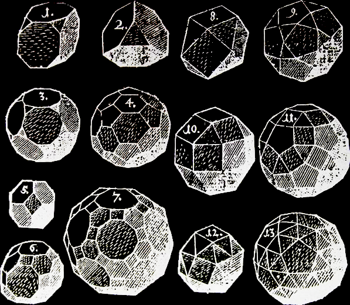

While Platonic solids are composed of regular n-gons of only one kind, the Archimedean solids admit regular n-gons of different kinds as faces
(here n is some integer 1, 2, 3, 4, …). In the program on the right you can continuously morph between certain Archimedean solids by moving the white point in the triangle.
All together there exist 13 Archimedean solids 11 of which can be reached using this program. The central solid can be rotated by dragging it.
|
 |
Kepler's drawings of Archimedean solids